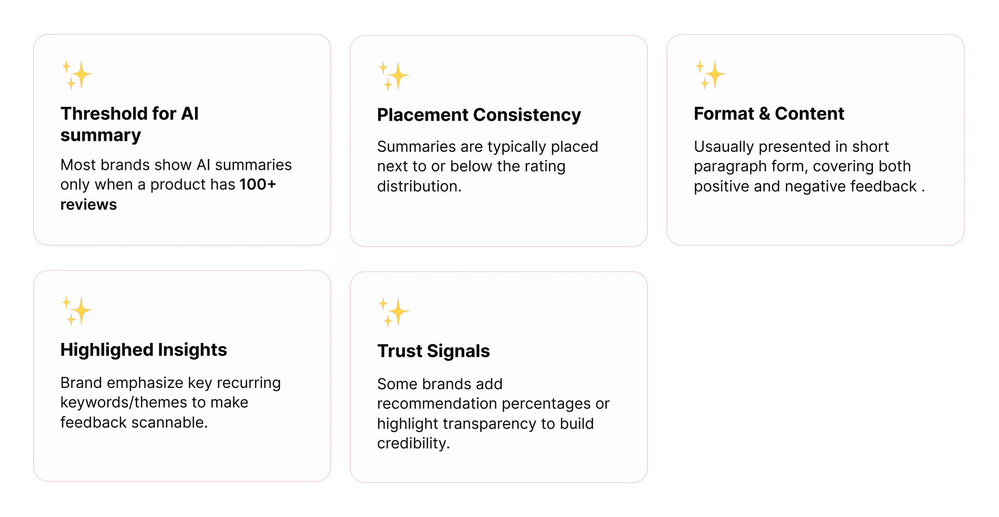
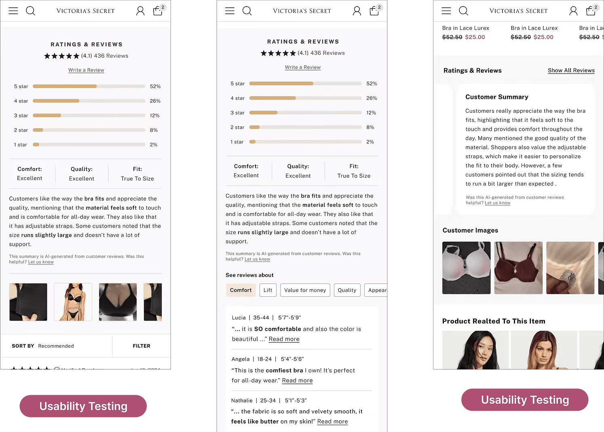

Problem Statement
At Victoria's secret confidence is everything, whether it’s in what you wear or how you shop. Around 62% of customers land on the PDP (Product detail)page to evaluate products, and the majority of our PDP traffic flows into the customer review funnel. However, 30% customers drop off due to overwhelming, unstructured, and repetitive customer reviews.

Proposed Solution
To address this, the goal was to integrate AI-generated review summaries into the Victoria’s Secret shopping experience. This feature delivers a concise, insight-rich paragraph highlighting key product information, helping customers make faster and more confident purchase decisions.
Our Primary Target Audience is USA-Based Customers 🇺🇸

New Customer
Returning Customers
Discovering New Categories
Global Collaboration with Cross-Functional Teams

Our Journey Begins
95% of Customers say that reviews matter to them


Existing Customer Review Funnel Experience on PDP
Customer reviews influence 80% of purchase decisions

Finding Customer Pain Points
Understanding Customer Pain Points through Data and User Research

High-Demand Categories

Products with High Customer Ratings
Our Findings from Data


Why are our customer skipping reviews?
In Our Customers’ Own Words

Assigned customers the task of adding a product to cart using reviews to identify challenges in the journey.

Key Insights from Customer Research

Re-defined Customer Problems
From our existing customer review experience, data analysis, and research insights, we identified the major pain points

The benefits of solving this customer problem are:
Customer point of view

Business point of view

Design approaches from others
How are others solving this problem?

Highlights of AI Summary Features from Our Competitors

Ideating Thoughts & Curiosity

3 Shortlisted Design Concepts
Concept 1
AI-Generated Summary with Key Attributes
Business point of view

Compare with Existing Design

Highlights
-
Key attributes highlight product features
-
Includes both positive and negative feedback
-
Organizes information in a logical flow : title → key attributes → summary paragraph → feedback mechanism, making it easy to consume.
Strengths
-
Helps users quickly grasp core product insights without scanning countless reviews.
-
Reduces information overload by summarizing repetitive and unstructured reviews..
-
Including both positive and negative points increases credibility and authenticity.
Consideration
-
If there are no negative reviews, only positive content will be shown in that case.
-
Even if a customer has only left negative comments, we will not display the AI summary features.
-
Ensure the AI correctly captures sentiments and key product aspects to avoid misleading summaries
Concept 2
AI Summary with paragraph
Proposed Design

Compare with Existing Design
Highlights
-
AI summary title is customer-focused rather than emphasizing AI, keeping it relatable.
-
Feedback mechanism allows users to indicate whether the summary was useful.
-
Includes both positive and negative customer feedback in a single paragraph for a balanced view
Strengths
-
Paragraph-style summary makes it easy for users to quickly grasp product sentiment.
-
Feedback mechanism guides future improvements and helps users assess content relevance.
-
Minimal design constraints can be implemented with low development effort.
-
Enhances user experience by reducing information overload from multiple reviews.
Consideration
-
Placement and length may need adjustment for mobile vs web experience to avoid clutter
-
If no reviews are available for a product, the AI summary feature cannot be applied.
-
If only positive reviews exist, the summary will reflect only positive points.
Concept 3
AI Summary with bullet points
Proposed Design

Compare with Existing Design
Highlights
-
Summaries review in bullet points for quick scanning.
-
Shows negative and positive feedback with thumps up and thumps down icons.
-
Includes AI disclaimer to inform users it’s genrated from reviews
-
Feedback mechanism allows users to indicate whether the summary was useful.
Strengths
-
Visual icons make sentiment immediately recognizable.
-
Easy to read and scan key points quickly
-
Balanced view of product through positive and negative higlights
-
Encouges users trust through disclaimer transpancy
-
Collect user feedback to improve AI summary relevance.
Consideration
-
Avoid too many bullet points to prevent clutter
-
Icons should be clear and universally understandable.
-
Disclaimer should be concise and readable.
-
Placement of feedback mechnasim should be noticeable but not distracting.
Initial Design Review with Cross-Functional Teams (AI, Tech, Product, Design)
Most of us preferred Design option 1
Re-iteration approach
Improving Concept 1 : Toward Better Usability


Design options presented to leadership for alignment

UsabilityTesting with New and Returning Customers
77% Positive Response to the Design Option with Summary Paragraph

33% Positive Response to the Design Option with featuring a horizontal card scroll and collapsed review summary

Final Design Hand off “ AI summary with Paragraph” on M-web
Product has more than
100 reviews

Product has less than 100 reviews

Error State

AI Summary Feedback Flow on M-Web

Final Design Hand off “ AI summary with Paragraph” on App
Product has more than
100 reviews

Product has less than 100 review or with no reviews

Error State

Final Design Hand off “ AI summary with Paragraph” on Desktop
Product has more than 100 reviews

Product has less than 100 review

Final Design Prototype
M-web
App
Impact of AI Summary Design
13% add-to-cart increase
66% found summary helpful
17% of users clicked 'See all reviews' indicating the summary met user needs